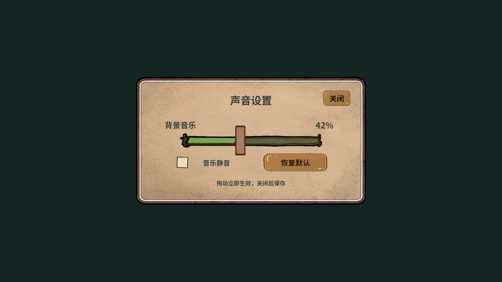
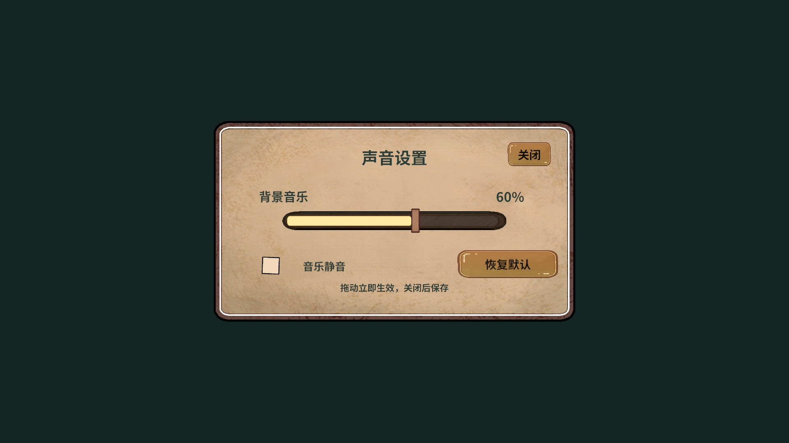

第五章Ice Walls约4分51秒
第六章Swing约2分48秒
默认BGM幅度+20%0.06 → 0.072
新增章节曲目
已提取视频音频并转MP3，保存至游戏Audio/Bgm。六章音乐分别进入独立AB；使用流式Vorbis加载。Android资源总量约24.12MiB，PC约24.33MiB，尚不是完整APK体积。
玩家声音设置
首页、选关和战斗都新增设置入口。BGM滑杆0～100%，默认60%；静音保留偏好值，恢复默认解除静音。拖动立即更新分类音量，关闭、切后台或退出时保存。设置加载和显示时暂停战斗业务推进。
隔离检查结果
默认120%、临时存档重建、上下界、NaN拒绝、恢复默认检查通过。真实PC AB预制体的属性回调验证滑杆42%、静音仅影响BGM、恢复60%及持久化通过。图集素材和UGUI离屏画面如下：

离屏夹具显式从真实AB图集提供Sprite，检查素材和布局，未验收正式RevUI自动图集绑定、鼠标/触屏拖动、关卡换曲或扬声器音质。未启动Play或切换用户场景。
交付与复验
AudioSettingsPanel.prefab位于GameRes/UI/Panel/Settings，独立ui_settings包约9KiB。设置服务/面板/流程使用Revolution公开门面，关键实现写中文注释。
game.audio-settings.check
game.audio-settings.preview
game.audio.check
新增开发GM：声音设置、BGM音量、声音查询。精简字库已同步，新增文案不缺字。
完整来源、实现与测试边界
滑条尺寸调整
保留用户更换的图片和其它控件位置。轨道545×46，填充与轨道对齐，手柄实际22×60；清除偏移与纵向叠加尺寸，避免细长手柄。PC/Android资源已同步；已有设置预制体重跑制作不会覆盖用户图片。

真实PC AB音量回调与离屏布局检查通过；未启动Play或进行手机拖动验收。